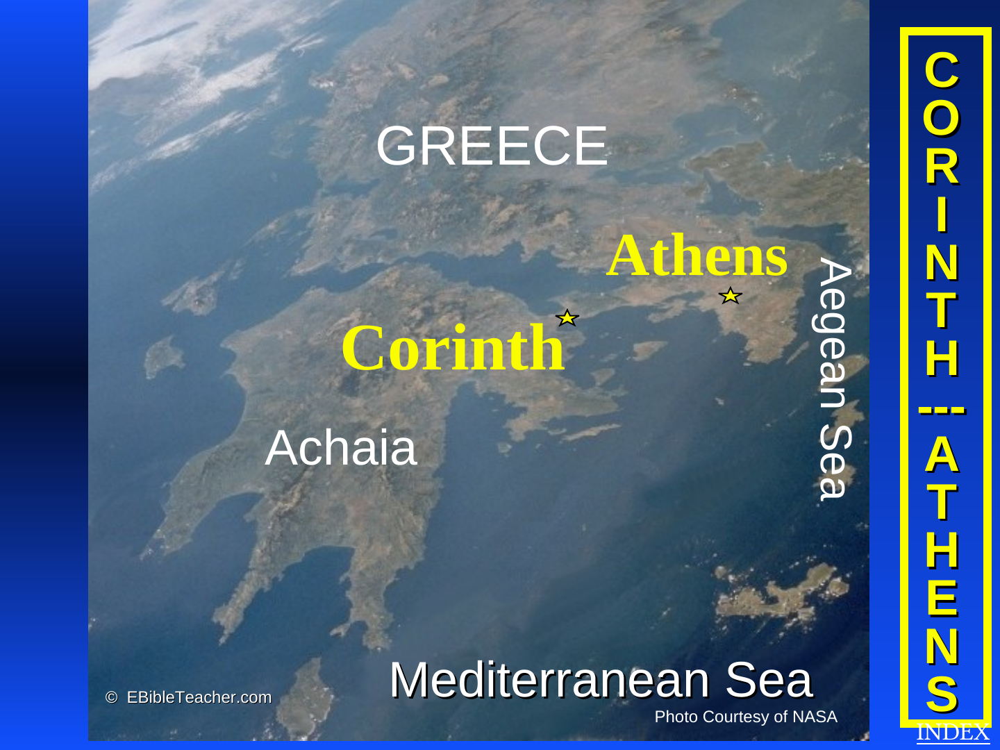

Paul — First Missionary Journey
A route associated with Acts 13–14 through Cyprus and southern Asia Minor.
Open routeThe atlas is especially strong here: three missionary journeys, the route to Caesarea, the voyage to Rome, letters to churches, Corinth, Athens, Thessalonica, Berea and the seven churches.

A route associated with Acts 13–14 through Cyprus and southern Asia Minor.
Open routeTravel through Macedonia and Achaia, connecting Acts with cities later receiving New Testament letters.
Open routeA revisiting journey centered strongly on Ephesus and earlier mission fields.
Open routeThe final major journey in the source atlas, including the shipwreck at Malta.
Open routeThis is one of the most powerful directions for the final product: from a city, visitors can move to Acts, Paul's visit, and related letters.
Acts 18 → 1 Corinthians → 2 Corinthians
Acts 16 → Philippians
Acts 17 → 1 Thessalonians → 2 Thessalonians
Acts 18–20 → Ephesians → Revelation 2:1–7
These key references support the main biblical claims on this page. Historical or traditional geography remains separately labeled.
“From thence to Philippi, which is the chief city of that part of Macedonia.”KJV excerpt
“Paul stood in the midst of Mars' hill, and said, Ye men of Athens.”KJV excerpt
“After these things Paul departed from Athens, and came to Corinth.”KJV excerpt
“When we came to Rome, the centurion delivered the prisoners.”KJV excerpt